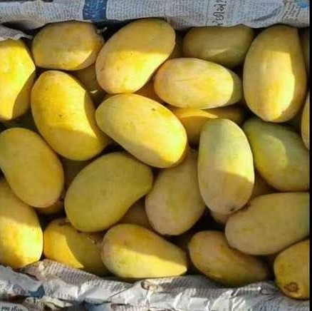
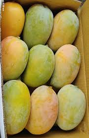

Introduction
Kesar mango is one of the most famous mango varieties in India. It is mainly grown in Gujarat and is known for its bright orange pulp, rich sweetness, and pleasant aroma.
Origin
Kesar mango was first grown in the Gir region of Gujarat. It got its name "Kesar" because of its saffron-colored (kesari) pulp.
Taste & Texture
Kesar mangoes are very sweet, juicy, and slightly tangy. The pulp is smooth and fiberless, making it perfect for eating and desserts.
Uses
• Fresh eating
• Mango shakes & juices
• Ice creams
• Aamras
• Sweets and desserts
Health Benefits
• Rich in Vitamin A and C
• Improves digestion
• Boosts immunity
• Good for skin and eyes
Season
Kesar mangoes are available from April to June.
⬅ Back to Home